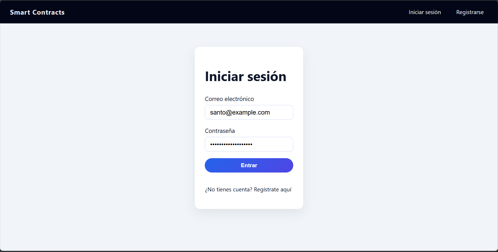
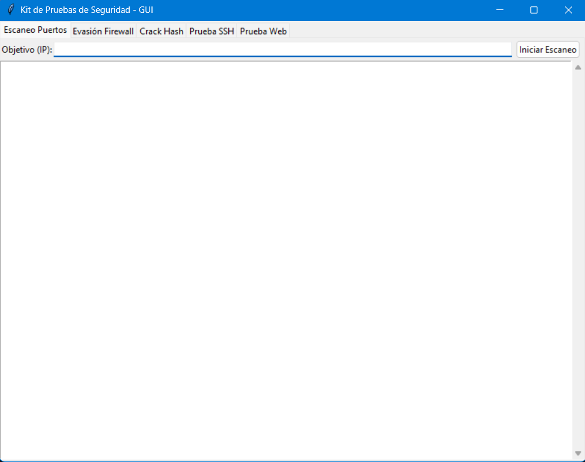
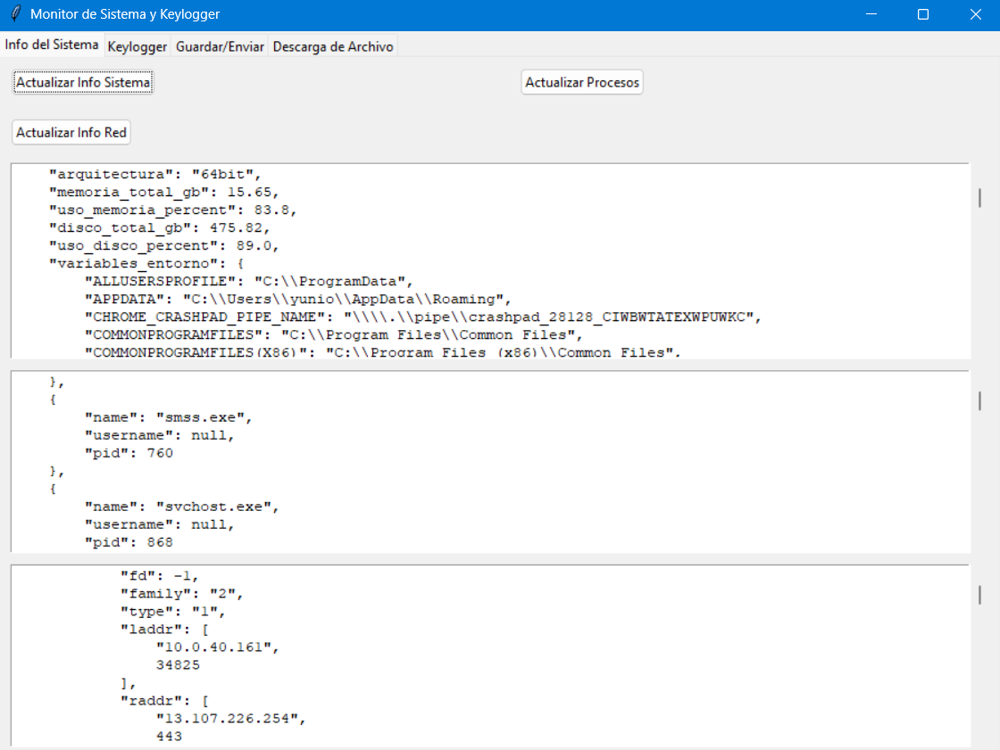
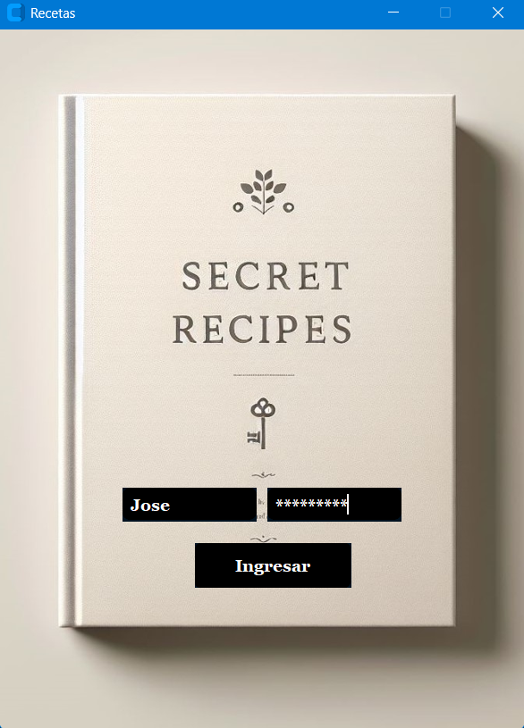

Proyecto desarrollado durante un hackatón donde obtuvimos el primer lugar.
La solución propone una evolución de una plataforma tradicional hacia un modelo SaaS + Fintech enfocado en conductores (gig workers),
con retención justa, billetera por capas y avances de liquidez para mejorar estabilidad y reducir fricción.

Solución full-stack que moderniza la gestión de contratos incorporando tecnologías emergentes para elevar confianza y trazabilidad.
Combina una aplicación web (React + TypeScript), una API (Node/Express) y una base de datos (SQL Server) con un smart contract en
Solidity para registrar estados de contrato de forma inmutable, aportando auditoría, transparencia y no repudio.
Este proyecto demuestra competencias avanzadas en diseño de sistemas, desarrollo orientado a objetos, consumo de servicios web, seguridad de la información y experiencia de usuario.

Un kit de pruebas de seguridad en Python con Tkinter para escaneo de puertos, evasión de firewall, crackeo de hashes y pruebas de credenciales SSH y web, en entornos controlados.

Una herramienta en Python con Tkinter que recopila información del sistema, registra pulsaciones de teclado y envía datos a un webhook, simulando exfiltración en un entorno controlado.

Un sistema de gestión contable integral para operaciones de compra-venta con control de inventario, proveedores y emisión de comprobantes, diseñado como aplicación de escritorio.

Una aplicación en Python con CustomTkinter y PIL para insertar, visualizar, editar y eliminar recetas, gestionando ingredientes y pasos de preparación de forma organizada.

Una herramienta educativa en Python con Pygame que genera y resuelve laberintos aleatorios usando el algoritmo de backtracking, mostrando cada fase de forma visual.